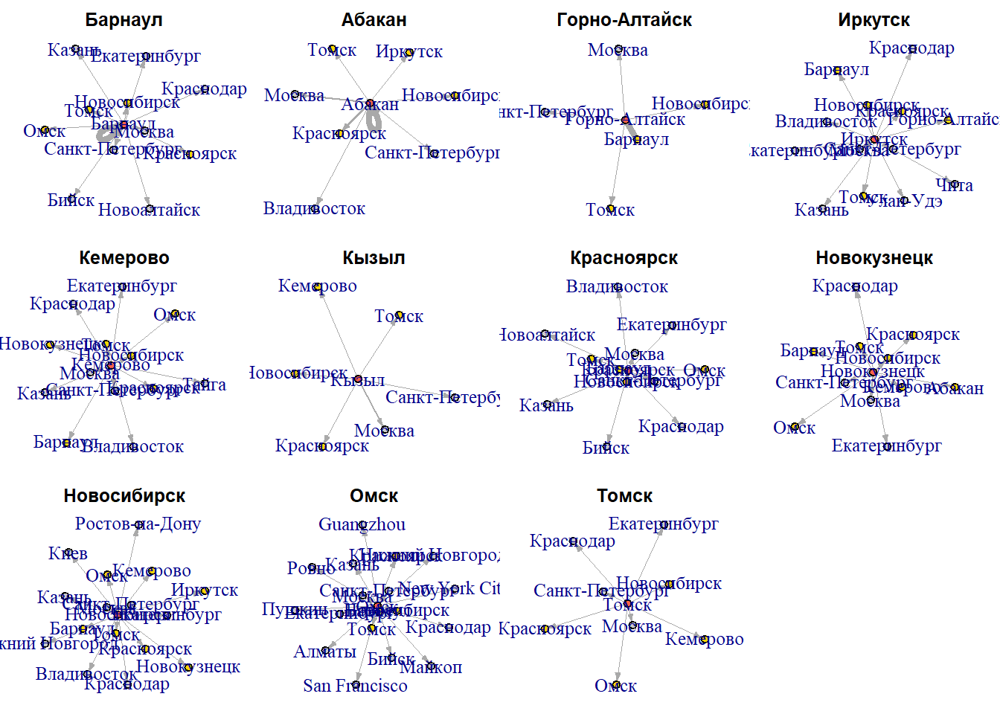
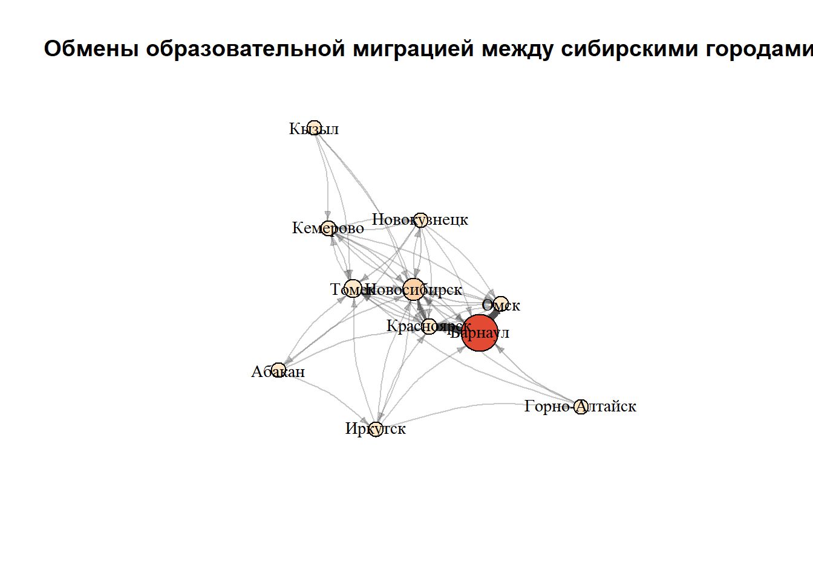

1. Генезис и развитие сетевого анализа как междисциплинарной методологии
Формирование сетевого анализа в качестве самостоятельной методологической парадигмы представляет собой результат конвергенции исследовательских программ в антропологии, социологии и дискретной математике, каждая из которых внесла уникальный вклад в его концептуальный и инструментальный аппарат.
1.1. Антропологические истоки (1920–1950-е годы).
Зарождение сетевой метафоры связано с работами британских социальных антропологов, стремившихся преодолеть статичное описание социальных структур. Альфред Рэдклифф-Браун использовал понятие «социальной структуры» как сети фактических отношений, утверждая, что именно устойчивые паттерны этих отношений, а не категории родства, должны быть первичным объектом изучения. Однако систематическую операционализацию этой идеи осуществил его последователь, Джон Барнс. В ходе полевых исследований в норвежской рыбацкой деревне Бремнес (1954) Барнс ввел термин «социальное поле» (social network) для описания неформальных связей, пересекающих формальные классовые и территориальные границы. Он концептуально разделил социальную жизнь на три сферы: территориальную, промышленную и сетевую, тем самым легитимизировав сеть как отдельный объект эмпирического исследования.
1.2. Социометрическая революция и формализация (1930–1970-е годы). Решающий шаг от метафоры к формальному анализу был сделан в рамках социометрической школы Якоба (Джекоба) Леви Морено, психиатра румынского происхождения. В работе «Who Shall Survive?» (1934) Морено не только предложил метод социометрии для измерения межличностных предпочтений, но и разработал технику социограммы — графического представления структуры группы, где индивиды изображались точками, а их отношения — соединяющими линиями. Это создало визуальный язык для анализа структурных паттернов: «звезд», «изолятов», «клик». Дальнейшее развитие методологии связано с двумя научными школами.
Манчестерская школа (Макс Глюкман, Элизабет Ботт) в 1950-60-х годах использовала сетевой анализ для изучения урбанизации в Центральной Африке и Англии, введя ключевые понятия «плотности» (density) и «мультиплексности» (multiplexity) связей. Гарвардская школа, сформировавшаяся вокруг Харрисона Уайта и его учеников в 1970-х, совершила переход к строгому математическому моделированию. Работа Марка Грановеттера «The Strength of Weak Ties» (1973) продемонстрировала эвристическую мощь сетевого подхода, показав, что слабые, непересекающиеся связи являются критическими каналами для распространения информации и мобильности, в то время как Рональд Берт в дальнейшем развил теорию «структурных дыр» (structural holes) как источников социального капитала.
1.3. Математический фундамент и компьютерная революция (XVIII–XXI века). Теоретической основой для формализации сетевых моделей послужила теория графов, родоначальником которой считается Леонард Эйлер. Его решение Кёнигсбергской задачи о мостах (1736) заложило основы для абстрактного представления систем как вершин и ребер. В XX веке венгерские математики Пал Эрдёш и Альфред Реньи создали теорию случайных графов (1959), которая стала базовой вероятностной моделью для статистического сравнения эмпирических сетей. Конец XX — начало XXI века ознаменовались «сетевым поворотом» в естественных и социальных науках, обусловленным доступностью больших цифровых данных и вычислительных мощностей. Работы Дункана Уоттса и Стивена Строгаца о моделях «малого мира» (1998) и Альберта-Ласло Барабаши о безмасштабных сетях и предпочтительном присоединении (1999) перенесли методы сетевого анализа в физику, биологию, информатику и наукометрию, превратив его в универсальный междисциплинарный язык для изучения сложных систем.
2. Система базовых понятий и метрик сетевого анализа
Сетевой анализ оперирует строго определенным категориальным аппаратом, который позволяет переводить качественные представления о связях в количественные показатели.
2.1. Фундаментальные элементы графа.
Вершина (Узел, Актор): Элементарная единица анализа, представляющая дискретную сущность (индивид, организация, веб-страница, ген). Множество вершин обозначается как V.
Ребро (Связь, Дуга): Линия, соединяющая пару вершин и обозначающая наличие отношения между ними. Множество ребер обозначается как E. Граф G формально определяется как упорядоченная пара G = (V, E). Классификация ребер является основой типологии сетей:
По направленности: ненаправленные (undirected) ребра (*u-v*) подразумевают симметричное отношение (совместная работа, дружба); направленные (directed) ребра, или дуги (u→v), отражают асимметричное отношение (цитирование, подчинение, денежный перевод).
По наличию веса: взвешенные (weighted) ребра имеют присвоенную числовую характеристику *w*, отражающую интенсивность, силу или частоту связи; невзвешенные (binary) ребра лишь фиксируют факт наличия связи (1/0).
Петля (loop) — ребро, соединяющее вершину саму с собой.
2.2. Атрибутивные характеристики. Для проведения статистического анализа и тестирования гипотез базовые элементы графа наделяются атрибутами.
Атрибуты вершин (vertex attributes): Качественные или количественные характеристики акторов (пол, возраст, статус, доход).
Атрибуты ребер (edge attributes): Характеристики самих связей (тип отношения, давность, эмоциональный тон). Вес является частным случаем атрибута ребра.
2.3. Метрики центральности и связности. Для количественной оценки положения вершины в глобальной структуре используется ряд индексов центральности, каждый из которых измеряет разные аспекты «важности» или «влияния».
Степень центральности (Degree Centrality): Число ребер, инцидентных вершине *v* (k_v). Для направленного графа различают входящую (k_in) и исходящую (k_out) степень. Является мерой локальной, непосредственной активности.
Центральность по посредничеству (Betweenness Centrality): Определяется как доля кратчайших путей (геодезических) между всеми парами вершин в сети, которые проходят через данную вершину *v*: C_B(v) = Σ_{s≠v≠t} (σ_{st}(v) / σ_{st}), где σ_{st} — число кратчайших путей между *s* и *t*, а σ_{st}(v) — число тех из них, что проходят через *v*. Высокое значение указывает на роль «брокера» или «шлюза», контролирующего потоки в сети.
Центральность по близости (Closeness Centrality): Обратная величина к сумме длин кратчайших путей от вершины *v* до всех других достижимых вершин:
*C_C(v) = (N-1) / Σ_{u} d(v,u)*, где d(v,u) — длина геодезического пути, N — число вершин. Отражает способность вершины быстро достигать все другие вершины в сети, меру независимости и эффективности.
Центральность по собственному вектору (Eigenvector Centrality): Мера влияния, основанная на принципе, что связь с высокоцентральными вершинами вносит больший вклад в центральность данной вершины. Формально определяется как главный собственный вектор матрицы смежности графа. Лежит в основе алгоритма PageRank.
2.4. Метрики на уровне целого графа описывают глобальные структурные свойства.
Плотность (Density): Отношение фактического числа ребер |E| к максимально возможному числу ребер в графе данного размера: *D = 2|E|/(|V|(|V|-1))* (для неориентированного графа без петель). Характеризует общий уровень связанности.
Диаметр (Diameter): Максимальная длина геодезического пути между любыми двумя вершинами в сети.
Коэффициент кластеризации (Clustering Coefficient): Для вершины *v* со степенью k_v определяется как доля существующих связей между ее соседями от максимально возможного их числа (*k_v(k_v-1)/2*). Средний по сети коэффициент кластеризации измеряет склонность к образованию транзитивных троек («друг моего друга — мой друг»).
Компоненты связности (Connected Components): Максимальные подмножества вершин, между любыми двумя из которых существует путь. В ориентированном графе выделяют слабые и сильные компоненты.
3. Формальные модели представления сетевых данных
Для хранения и обработки сетевых структур в вычислительной среде используются три принципиальные формальные модели, каждая из которых обладает специфическими преимуществами в зависимости от размера, плотности и этапа анализа сети.
3.1. Матрица смежности (Adjacency Matrix). Представляет собой квадратную бинарную или весовую матрицу A размером \(|V| \times |V|,\) в которой элемент \(a_{ij}\) указывает на наличие и, возможно, вес ребра, направленного от вершины \(i\) к вершине \(j\). Для неориентированного графа матрица является симметричной \(a_{ij} = a_{ji}\) Данный формат является концептуально простым и позволяет напрямую применять аппарат линейной алгебры (например, для вычисления собственных значений). Однако для разреженных сетей (где \(|E| << |V|^2\) )он крайне неэффективен с точки зрения потребления памяти, так как требует хранения \(|V|^2\) элементов, большинство из которых нулевые.
3.2. Список ребер (Edge List). Наиболее экономный и широко используемый на практике формат. Представляет собой текстовый файл или data frame, где каждая строка кодирует одно ребро. Минимальная структура включает два обязательных поля: идентификатор вершины-источника (from) и вершины-цели (to). Для взвешенных сетей добавляется третье поле (weight), а для хранения атрибутов ребер — дополнительные столбцы. Список ребер является естественным форматом для ввода данных и эффективно хранится в памяти, но для некоторых алгоритмов (например, быстрой проверки наличия конкретного ребра) требует предварительной индексации или преобразования.
3.3. Список смежности (Adjacency List). В данной модели для каждой вершины *v* хранится линейный список (или вектор) идентификаторов всех вершин, смежных с *v*. Этот формат представляет собой компромисс между матрицей смежности и списком ребер: он требует памяти порядка \(O(|V| + |E|)\), что оптимально для разреженных сетей, и при этом позволяет быстро итерировать по соседям любой заданной вершины, что критично для многих алгоритмов обхода графа (поиск в ширину/глубину). Однако проверка наличия конкретного ребра (i, j) может потребовать поиска в списке соседей вершины *i*.
Выбор модели представления на этапе загрузки данных в R (например, функциями graph_from_adjacency_matrix() или graph_from_data_frame() пакета igraph) определяет последующую эффективность вычислительных процедур. Современные сетевые пакеты, как правило, используют внутреннее представление на основе списков смежности для обеспечения высокой производительности операций.
4. Библиотеки в R для сетевого анализа: сравнительный анализ функциональных возможностей
R располагает развитой экосистемой пакетов для сетевого анализа, каждый из которых ориентирован на решение специфического круга задач. Выбор библиотеки определяется характером исследовательских вопросов, форматом исходных данных и требуемым уровнем аналитической абстракции.
Пакет igraph. Написанный на C, является основой для большинства сетевых исследований в R и характеризуется высокой вычислительной эффективностью. Его функционал охватывает широкий спектр задач: от создания и манипулирования графами, расчета комплексных метрик центральности, кластеризации и анализа сообществ до продвинутой визуализации. Алгоритмическая основа igraph позволяет работать с сетями, состоящими из сотен тысяч вершин и ребер, что делает его незаменимым инструментом для анализа крупномасштабных структур. Однако его синтаксис и объектная модель являются специфичными и требуют отдельного изучения, а визуализация, хотя и гибкая, может уступать в эстетике специализированным графическим пакетам.
Пакет statnet/sna. Данное семейство пакетов, включающее network, sna, ergm и tergm, было разработано социологами для статистического анализа сетей, в частности, для применения экспоненциальных моделей случайных графов (ERGM). Его ключевое преимущество заключается в глубокой интеграции с парадигмой статистического вывода, позволяющей тестировать гипотезы о локальных механизмах формирования сетевых структур (например, о склонности к транзитивности, гомофилии или предпочтительном присоединении). Объект класса network является более «социоцентричным» по сравнению с объектом igraph, а визуализация осуществляется через пакет GGally, что обеспечивает согласованность с грамматикой графики ggplot2. К ограничениям можно отнести относительно меньшую производительность на очень больших сетях и более узкую, по сравнению с igraph, реализацию алгоритмов анализа путей и сообществ.
Пакет tidygraph. Этот пакет, построенный на философии tidyverse, представляет собой мост между производительностью igraph и удобством манипулирования данными в стиле dplyr. Он оборачивает объекты igraph в tibble-подобный интерфейс, позволяя использовать такие стандартные операции, как filter(), mutate() и group_by(), для работы с узлами и ребрами графа. Такой подход существенно повышает читаемость и воспроизводимость кода, особенно на этапах предобработки данных и расчета простых метрик. Однако для выполнения специализированных сетевых алгоритмов tidygraph делегирует вычисления бэкенду igraph, что делает его не самостоятельным аналитическим инструментом, а удобной абстракцией над ним.
Пакет ggraph. Специализированное расширение ggplot2 для визуализации графов. ggraph реализует принципы грамматики графики для сетевых данных, предоставляя исследователю полный контроль над эстетическими элементами (геометрия узлов и ребер, цвет, размер, прозрачность) и компоновкой графа (force-directed, circular, tree-based и др.). Интеграция с tidygraph создает целостный конвейер для анализа и визуализации: от сырых данных до публикационного качества графики. Его использование является стандартом для создания сложных, многослойных сетевых диаграмм.
Таким образом, современный аналитический процесс часто представляет собой комбинацию нескольких пакетов: tidygraph для манипуляции и предварительного анализа, igraph для вычисления сложных метрик и алгоритмов кластеризации, statnet для статистического моделирования и ggraph для финальной визуализации.
5. Пример анализа: данные об образовательной миграции в Сибири
Для иллюстрации возможностей R и пакета igraph воспользуемся данными об образовательной миграции молодежи 18-24 лет из городов Сибири, полученными в результате парсинга социальной сети ВК в октябре 2025 года. Скачать данные (ссылка).
library(dplyr)
Присоединяю пакет: 'dplyr'
Следующие объекты скрыты от 'package:stats':
filter, lag
Следующие объекты скрыты от 'package:base':
intersect, setdiff, setequal, union
library(igraph)
Присоединяю пакет: 'igraph'
Следующие объекты скрыты от 'package:dplyr':
as_data_frame, groups, union
Следующие объекты скрыты от 'package:stats':
decompose, spectrum
Следующий объект скрыт от 'package:base':
union
edges <-read.csv("edges.csv", stringsAsFactors =FALSE)edges <- edges %>%rename(from = df2, to = title, weight = n)# уберём пустые назначения, если они естьedges <- edges %>%filter(to !="")head(edges)
X from to weight
1 1 Абакан Абакан 350
2 2 Абакан Владивосток 13
3 3 Абакан Иркутск 59
4 4 Абакан Красноярск 118
5 5 Абакан Москва 77
6 6 Абакан Новосибирск 53
Создадим граф на основе наших данных:
g <-graph_from_data_frame(d = edges[,-1],directed =TRUE,vertices =NULL)E(g)$weight <- edges$weightg
“Клубок связей” в центре - это миграционные обмены между самими сибирскими городами.
Поскольку в фокусе нашего анализа находятся сибирские города, имеет смысл сделать анализ по каждому городу в отдельности. Для каждого города создадим эго-граф, где этот город будет в центре, а остальные вокруг.
library(scales)par(mfrow =c(3, 4), mar =c(1, 1, 2, 1))set.seed(123)sib_cities <-c("Барнаул","Абакан","Горно-Алтайск","Иркутск","Кемерово","Кызыл","Красноярск","Новокузнецк","Новосибирск","Омск","Томск")for (ct in sib_cities) {# эго-граф: все исходящие связи из города eg_edges <-incident(g, V(g)[name == ct], mode ="out") g_ego <-subgraph.edges(g, eg_edges, delete.vertices =FALSE)# оставляем только максимальную компоненты (в неориентированной версии) comps <-components(as_undirected(g_ego, mode ="collapse")) giant_id <-which.max(comps$csize) keep_vertices <-V(g_ego)[comps$membership == giant_id] g_ego_gc <-induced_subgraph(g_ego, keep_vertices)# добавляем цвет: сам город, другие 10 сибирских, прочие направленияV(g_ego_gc)$color <-ifelse(V(g_ego_gc)$name == ct, "tomato",ifelse(V(g_ego_gc)$name %in% sib_cities, "gold", "gray80"))set.seed(123) coords_ego <-layout_with_fr(g_ego_gc, weights =E(g_ego_gc)$weight)plot(g_ego_gc,layout = coords_ego,vertex.size =10,vertex.label.cex =1.2,edge.arrow.size =0.25,edge.width =rescale(E(g_ego_gc)$weight, to =c(0.5, 4)),main = ct)}
Warning: `subgraph.edges()` was deprecated in igraph 2.1.0.
ℹ Please use `subgraph_from_edges()` instead.
par(mfrow =c(1, 1))

Посмотрим, в какие другие города чаще всего уезжает молодежь из каждого города:
# A tibble: 11 × 3
from n_dests top5
<chr> <int> <chr>
1 Абакан 8 Абакан (350); Владивосток (13); Иркутск (59); Краснояр…
2 Барнаул 12 Барнаул (2915); Бийск (14); Екатеринбург (24); Казань …
3 Горно-Алтайск 5 Барнаул (247); Москва (19); Новосибирск (20); Санкт-Пе…
4 Иркутск 14 Барнаул (19); Владивосток (37); Горно-Алтайск (17); Ек…
5 Кемерово 14 Барнаул (13); Владивосток (15); Екатеринбург (17); Каз…
6 Красноярск 13 Барнаул (2908); Бийск (14); Владивосток (12); Екатерин…
7 Кызыл 7 Кемерово (16); Красноярск (31); Кызыл (149); Москва (5…
8 Новокузнецк 12 Абакан (17); Барнаул (31); Екатеринбург (19); Кемерово…
9 Новосибирск 17 Барнаул (62); Владивосток (23); Екатеринбург (36); Ирк…
10 Омск 19 Guangzhou (11); New York City (13); San Francisco (11)…
11 Томск 9 Екатеринбург (14); Кемерово (17); Краснодар (17); Крас…
edges %>%group_by(to) %>%summarise(s=sum(weight))
# A tibble: 32 × 2
to s
<chr> <int>
1 Guangzhou 11
2 New York City 13
3 San Francisco 11
4 Абакан 367
5 Алматы 17
6 Барнаул 9075
7 Бийск 51
8 Владивосток 100
9 Горно-Алтайск 17
10 Екатеринбург 207
# ℹ 22 more rows
Посмотрим на показатели обмена между сибирскими городами:
sib <-c("Барнаул","Абакан","Горно-Алтайск","Иркутск","Кемерово","Кызыл","Красноярск","Новокузнецк","Новосибирск","Омск","Томск")edges_sib<-edges %>%filter(from %in% sib, to %in% sib, from != to) # убираем петлиg_sib <-graph_from_data_frame(edges_sib[,-1], directed =TRUE)E(g_sib)$weight <- edges_sib$weight# размеры вершин по суммарному входящему потокуin_str <-strength(g_sib, mode ="in")V(g_sib)$size <-rescale(in_str, to =c(10, 25))# цвет вершин – по входящему потоку (градиент)pal <-colorRampPalette(c("#fee8c8", "#fdbb84", "#e34a33"))V(g_sib)$color <-pal(5)[cut(in_str, breaks =5, labels =FALSE)]# цвет и толщина рёбер – по весу потокаE(g_sib)$width <-rescale(E(g_sib)$weight, to =c(1, 6))E(g_sib)$color <-alpha("gray30", rescale(E(g_sib)$weight, to =c(0.3, 1)))E(g_sib)$arrow.size <-0.4set.seed(123)coords <-layout_with_fr(g_sib, weights =E(g_sib)$weight)plot(g_sib,layout = coords,vertex.label.cex =0.9,vertex.label.color ="black",edge.curved =0.2,main ="Обмены образовательной миграцией между сибирскими городами")

Таким образом, сетевой анализ потоков образовательной миграции показывает, что сибирское пространство сильно иерархизировано: при наличии обменов между 11 городами основная масса абитуриентов концентрируется в нескольких узлах, прежде всего в Новосибирске, Томске, Барнауле, Омске и Красноярске. Эти города выступают одновременно и как крупные доноры, и как магниты, формируя «каркас» региональной сети, тогда как более малые центры (Абакан, Горно-Алтайск, Кызыл) встроены в неё преимущественно как периферийные источники с ограниченным набором направлений и сильной зависимостью от крупных университетских центров.
Дополнительные источники для изучения: Огнянова К. Network Analysis and Visualization with R and igraph. URL: https://kateto.net/netscix2016.html
Ognyanova K. Static and dynamic network visualization with R. URL: https://kateto.net/network-visualization/
Csardi G., Nepusz T. The igraph software package for complex network research. URL: https://igraph.org/
igraphdata: A Collection of Network Data Sets for the “igraph” Package. URL: https://cran.r-project.org/web/packages/igraphdata/
Reuning K. Social Network Analysis in R. URL: https://kevinreuning.com/resources/SNA_Code.html
Social Network Analysis: A primer, a guide and a tutorial in R [Электронный ресурс]. URL: https://lamethods.org/book1/chapters/ch15-sna/ch15-sna.html